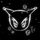

DarkLine ProjectДобро пожаловать в DarkLine Project!
HardRP проект по вселенной SCP Foundation.
МОБИЛЬНЫЕ ОПЕРАТИВНЫЕ ГРУППЫ
Приписанные к ИЗСАО-243 и взаимодействующие подразделения
Название
Специализация: —
Описание...
ГРУППЫ СТРАТЕГИЧЕСКОГО РЕАГИРОВАНИЯ (SRT)
Специализированные группы немедленного реагирования ИЗСАО-243
SRT-1 «Альпинисты»
Миссия: Специализируется на немедленном проникновении во внутренние сектора ИЗСАО-243 при объявлении чрезвычайной ситуации, потере связи с комплексом или срабатывании любого КИР. Бойцы группы обучены действовать в условиях полной темноты, вертикальных перепадов, задымления и в условиях с физоссюреалистической аномалией.
SRT-2 «Закон»
Миссия: Отвечает за внутреннюю безопасность персонала и силовое задержание на территории ИЗСАО-243. Оперативники специализируются на выявлении, преследовании и нейтрализации диверсантов, внедрённых агентов враждебных организаций, а также сотрудников, нарушивших протоколы содержания.
SRT-3 «Сиерра»
Миссия: Обеспечивает оборону внешнего периметра ИЗСАО-243 и располагается на одной из его дальних укреплённых частей. Задачей группы является отражение атак сторонних вооружённых формирований, включая рейды Повстанцев Хаоса, и прикрытие входов в комплекс.
Рабочий состав
Административный отдел
- Директор Зоны (5 B): Главная личность во всей зоне, имеет полный контроль над учреждением и его сотрудниками. Имеет табельное.
- Менеджер Сектора “Альфа” (4 B): Правая рука директора зоны, также имеет полный контроль, но не имеет доступ к секретным файлам. Имеет табельное.
- Менеджер Отдела Кадров (3 B): Глава персонала. Отвечает за новых сотрудников, зарплаты и кадры. Табельного не имеет.
- Менеджер зоны (ТЗС/ЛЗС/АЗ) (3 C): Отвечает за какую-либо зону учреждения. Не имеет табельное.
- Бухгалтер (3 C): Отвечает за денежные расходы зоны. Табельное не имеет.
Научный отдел
- Руководитель научной службы сектора “Альфа” (4 B): Управление всей научной службой. Руководит экспериментами. Имеет табельное.
- Старший Научный сотрудник (3 C): Заслуженный сотрудник с большим опытом. Проводит эксперименты.
- Научный сотрудник (2 C): Базовый сотрудник. Занимается изучением аномальных объектов.
- Лаборант (1 C): Стажёр. Не имеет права проводить эксперименты самостоятельно.
Отдел Службы Безопасности
- Начальник СБ ИЗСАО №243 (Майор СБ) (4 B): Управляет всем СБ. Абсолютно лоялен, заслуженный сотрудник. Большой боевой опыт.
- Капитан (3 B): Правая рука Майора. Руководит СБ при его отсутствии. Лоялен.
- Лейтенант (3 C): Заслуженный сотрудник Службы Безопасности.
- Сержант (3 C): Среднее звено Службы Безопасности.
- Рядовой (3 C): Недавно пришедший сотрудник, прошедший обучение.
Инженерная Служба
- Руководитель инженерной службы сектора “Альфа” (4 B): Управляет всей инженерной службой. Имеет табельное.
- Старший Инженер (3 C): Заслуженный сотрудник с большим опытом.
- Специалист КС (3 C): Проверка и починка камер содержания.
- IT-Специалист (3 C): Проверка и починка компьютерных систем Фонда.
- Штатный Инженер (2 C): Базовый сотрудник. Занимается починкой базовых вещей.
- Младший Инженер (1 C): Стажёр из техникума.
Обслуживающий персонал
- Уборщик (2 C): Поддержание чистоты.
- Повар (2 C): Работник кафетерия.
D-class
- D-class (0 D): Испытуемый. В зоне содержатся только II, III и IV категории.
Информация о вооружении
| Звание | Экипировка |
|---|---|
| Начальник СБ (Майор) | Тяжелая броня, МОГ-E11-SR, Com-18, аптечка, осколочная граната, СШГ, рация, ID-карта |
| Капитан / Лейтенант / Сержант | Средняя броня, МОГ-E11-SR, Com-18, аптечка, СШГ, рация, ID-Карта |
| Рядовой | Средняя броня, Crossvec, Com-18, аптечка, СШГ, рация, ID-Карта |
При Чрезвычайной Ситуации Сотрудникам Службы Безопасности разрешено перевооружаться со склада без разрешения!
Прикрепленные отделы ИЗСАО-243
Административная служба
- Отдел бухгалтерского учёта
- Архивный отдел
- Комитет по этике
Инженерно-техническая служба
- Инженерное отделение
- Группа по применению особых технологий (ГПОТ)
- Отдел по применению искусственного интеллекта (ОПИИ)
Медицинская служба
- Отдел психологии
- Отдел парамедицины
- Отдел парапсихологии
- Отдел по борьбе с выгоранием
Научная служба
- Отделение теологии и телеологии
- Отдел меметики
- Отдел антимеметики
- Подразделение по взаимодействию с аномальными сущностями (ПВАС)
- Отдел содержания
- Группа исследования экспериментального содержания (ГИЭС)
- Отдел Физоссюреальности
Служба безопасности
- Конвойный (эскортный) отряд
- Комендантский отряд
- Отряд специального назначения
- Группа тех. обеспечения и контроля
Служба внутреннего трибунала
- Отдел внутренней безопасности (ОВБ)
Служба логистики
- Отдел логистики и управления ресурсами
- Отдел транспорта
История ИЗСАО-243
1957: Основание ИЗСАО-243
Исследовательская Зона Содержания Аномальных Объектов 243 была построена в 1957 году как совместный проект Фонда и швейцарского правительства под прикрытием строительства военной базы в горном массиве. Скальные породы обеспечивают естественную защиту от внешних угроз. Основные помещения были вырублены в граните, а внешний периметр оборудован по последнему слову военной маскировки.
1982: Расширение комплекса
В 1982 году комплекс был расширен для размещения новых аномальных объектов.
2004: Модернизация и подключение к SCP Terminal Access
В 2004 году зона прошла модернизацию систем безопасности и была подключена к SCP Terminal Access. Официально НАТО не подтверждает существование базы, а все спутниковые снимки засекречены.
Справочная информация
Исследовательская Зона Содержания Аномальных Объектов 243
ДАННЫЕ ДЛЯ ВНУТРЕННЕГО ПОЛЬЗОВАНИЯ - УРОВЕНЬ ДОПУСКА 2
Местоположение: Альпы, Швейцария. Зона замаскирована под Военную Секретную Базу НАТО.
Площадь: 18.3 км² ████████”N ████████"E
Сектора комплекса:
- Сектор «Сиерра»: Внешний периметр, КПП, системы маскировки.
- Сектор «Альфа»: Главный исследовательский и административный сектор (Лаборатории Зон Содержания, Тактические Зоны Содержания, Административная Зона).
- Сектор «Бета»: Сектор Отдела Физоссюреальности (A-SYNC). Изучение вероятностных аномалий, реальностных искажений.
- Сектор «Гамма»: Жилой сектор персонала.
- Сектор «Дзета»: Военный сектор, тренировочные полигоны МОГ.
Дополнительная информация: На территории учреждения располагаются центры базирования МОГ Тета-7 “Вероятность Нуля”, а также тактических групп SF-1, SF-2, SF-3. Здесь базируется отдел физоссюреальности как его главный центр.
КИР — Код Изоляционного Реагирования
Код Изоляционного Реагирования (КИР) — протокол для сообщения о бедствии.
Приоритеты КИР:
| Приоритет | Время | Описание |
|---|---|---|
| A | до 1 часа | Наивысший приоритет. Незамедлительные действия |
| B | до 2 часов | Критическое реагирование |
| C | до 5 часов | Срочное реагирование |
| D | до 24 часов | Стандартное реагирование |
| E | до 72 часов | Низкий приоритет |
Коды угроз:
САР — Системы Автоматического Реагирования
Иерархия Службы Безопасности
| Звание | Обязанности |
|---|---|
| Рядовой службы безопасности | Рядовой состав. Патрульно-постовая служба, внутренняя безопасность. |
| Сержант Службы Безопасности | Младший офицерский состав. Командование малыми соединениями. |
| Лейтенант Службы Безопасности | Старший офицерский состав. Управление подразделением в смене. |
| Капитан Службы Безопасности | Глава СБ смены. Отвечает за распорядок в секторе. |
| Майор (Начальник) Службы Безопасности | Высший офицерский состав. Обеспечение работы подразделения СБ. |
| Подполковник Службы Безопасности | Высшее командующее звено. Операции на территории учреждения. |
| Заместитель директора по безопасности | Заместитель директора Зоны. Отвечает за структуру и обучение всей СБ. |
SCP Объекты

Объект №: SCP-173
Класс: Евклид
Особые условия содержания: Объект SCP-173 должен постоянно храниться в закрытом контейнере. При посещении персоналом контейнера с SCP-173 в контейнер должно входить не менее трёх человек, и дверь должна быть немедленно заперта за ними.
Описание: SCP-173 одушевлён и крайне враждебен. Объект не может двигаться в то время, когда находится в пределах прямой видимости.

Объект №: SCP-096
Класс: Евклид
Особые условия содержания: SCP-096 должен постоянно содержаться в своей камере (герметичный стальной куб 5х5х5 м). Обязательны еженедельные проверки на наличие любых трещин или отверстий.
Описание: SCP-096 – гуманоидное существо ростом приблизительно 2,38 метра. Когда кто-либо видит лицо SCP-096, он приходит в состояние крайнего эмоционального переживания и убивает увидевшего.

Объект №: SCP-106
Класс: Кетер
Особые условия содержания: SCP-106 следует содержать в герметичном контейнере, состоящем из сорока слоёв стали со свинцовым покрытием. Физическое взаимодействие с SCP-106 запрещено при любых обстоятельствах.
Описание: SCP-106 — гуманоидное существо, которое может проходить сквозь твердые материалы, оставляя за собой коррозийный след.

Объект №: SCP-049
Класс: Евклид
Особые условия содержания: SCP-049 содержится в стандартной укреплённой камере содержания гуманоидов.
Описание: SCP-049 — гуманоидное существо ростом около 190 см, внешне схожее со средневековым чумным доктором. Он считает себя врачом и пытается "лечить" людей от "Поветрия".

Объект №: SCP-079
Класс: Евклид
Особые условия содержания: SCP-079 хранится в хранилище с двойной дверью. Запрещается подключать его к телефонной линии или интернету.
Описание: SCP-079 - микрокомпьютер модели Exidy Sorcerer, выпущенный в 1978, который со временем развил искусственный интеллект.

Объект №: SCP-268
Класс: Евклид
Особые условия содержания: SCP-268 хранится в надёжном хранилище. Использование возможно только после тщательного рассмотрения.
Описание: SCP-268 представляет собой головной убор. Надетая кепка делает человека незаметным для окружающих.

Объект №: SCP-914
Класс: Безопасный
Особые условия содержания: К работе с объектом допускаются только сотрудники, подавшие официальный запрос. SCP-914 должен храниться в исследовательской ячейке 109-B.
Описание: SCP-914 - большой цельный часовой механизм. Может "усовершенствовать" любой помещённый в него объект в зависимости от выбранного режима.

Объект №: SCP-500
Класс: Безопасный
Особые условия содержания: SCP-500 следует хранить в прохладном и сухом месте, вдали от яркого света. Допуск только для персонала с 4 уровнем.
Описание: SCP-500 — красные таблетки, которые при пероральном приёме излечивают субъекта от всех болезней в течение двух часов.

Объект №: SCP-939-G
Класс: Евклид (GMO)
Особые условия содержания: Содержатся в герметичной камере с системой шумоподавления. Вход разрешен только в тактических шлемах с активным шумоподавлением.
Описание: Генно-модифицированные особи SCP-939, полученные в результате искусственной репликации. Отличаются способностью к анализу речи и фонофобией (боязнью громких звуков).

Объект №: SCP-6500-RU
Название: «Сердце Истины»
Класс: Евклид
Особые условия содержания: Хранится в герметичной камере с двойными свинцово-керамическими стенами, погружённый в сплав ртути при 20°C. Доступ только для персонала уровня 4/6500. Прямой контакт запрещён.
Описание: Артефакт в виде камня с треугольным минералом, испускает мнемоническое излучение. При нахождении рядом с разумными существами переписывает воспоминания о групповой идентичности и лояльности, создавая фанатичную преданность объекту.
Меню Кафетерий
| День недели | Завтрак | Обед | Ужин |
|---|---|---|---|
| Понедельник | Овсянка с ягодами | Борщ, куриная котлета с гречкой | Рыба на пару с овощами |
| Вторник | Творожная запеканка | Суп-пюре, гуляш с макаронами | Салат "Цезарь" с курицей |
| Среда | Яичница с беконом | Рассольник, плов с мясом | Стейк из лосося с рисом |
| Четверг | Сырники со сметаной | Щи, голубцы | Куриные крылья с картофелем |
| Пятница | Панкейки с мёдом | Суп с фрикадельками, макароны по-флотски | Пицца Маргарита |
| Суббота | Каша рисовая с маслом | Солянка, бефстроганов | Спагетти с морепродуктами |
| Воскресенье | Блины с вареньем | Куриный суп с лапшой, котлеты с пюре | Зразы с грибами |
Общие напитки (доступны ежедневно)
- Чай (чёрный, зелёный, травяной)
- Кофе (эспрессо, американо, капучино)
- Соки (апельсиновый, яблочный, мультифрукт)
- Вода (газированная, негазированная)
- Кефир, молоко, йогурт
⚠ ВНИМАНИЕ
В связи с медицинскими, религиозными или иными личными противопоказаниями, сотрудники имеют право подать заявление на изменение персонального меню. Заявления принимаются через отдел логистики по форме №97-А.
Админ Панель
Загрузка пользователей...